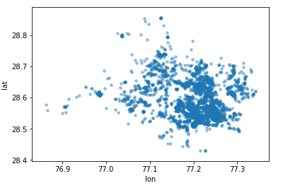
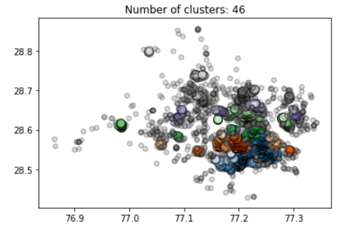
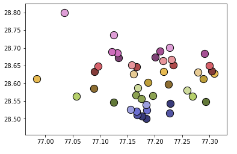
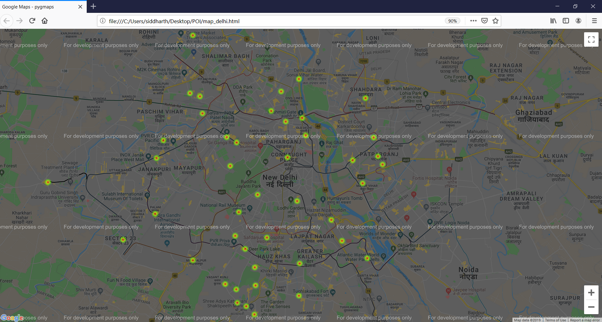

Setup
Create a Conda Environment or Virtual Environment.
$ pip install virtualenv
$ virtualenv myenv
Activate the created Environment.
$ myenv\Scripts\activate
Install all the dependencies for the analysis.
$ pip install -r requirements.txt
Overview of Methodology
Identification of all the Markets/Commercial Centers in NCR using OSM Point of Interest Data.
Data Collection
Point of Interest OSM data for New Delhi was collected using the overpass API.
overpass_query = """
[out:json];
area["ISO3166-2"="IN-DL"];
node["amenity"=](area);
out;
"""
Data Description
- Elements in the data were represented as nodes.
- Each node comprises of the Latitude, Longitude and tags.
- Tags provide a description of the corresponding node.
Data Cleaning
- Nodes with no tags were removed from the dataset as it was not possible to determine their commercial significance.
- Attributes in tags that were not highlighting any commercial significance of the nodes were removed.
- Nodes with tags of commercial significance were finally selected for market identification.
Data Visualization
Nodes in the data plotted on a Scatter Plot.
Clustering Algorithm Description
Density-based Spatial Clustering of Applications with Noise (DBSCAN)
DBSCAN forms clusters that are dense regions in the data space, separated by regions of the lower density of points. The DBSCAN algorithm is based on this intuitive notion of “clusters” and “noise”.
Reasons for selecting DBSCAN
- Partitioning methods (K-means, PAM clustering) and hierarchical clustering work for finding spherical-shaped clusters or convex clusters.
- DBSCAN algorithm tries to locate regions of high density that are separated from one another by regions of low density. Therefore, while dealing with spatial clusters of different density, size and shape, DBSCAN gives better results.
- Another advantage of DBSCAN is that the parameters required are spatial parameters like distance(epsilon) and number of samples in neighborhood(min_sample). These parameters are easier to set in spatial clustering over parameters like number of clusters required.
Distance Metric - Haversine Metric - The haversine formula determines the great-circle distance between two points on a sphere given their longitudes and latitudes.
We feed in our lists of latitutdes and longitudes for the nodes to the algorithm.
Results
The following scatter plot provides an overview of the markets(clusters) identified during analysis.
x axis - Longitude, y axis - Latitude
The following scatter plot provides an overview of the center coordinates of the markets identified during analysis.
x axis - Longitude, y axis - Latitude
The following map highlights the results (all the commercial centers/markets) obtained after analysis marked on New Delhi's map.
Using Reverse Geocoding for visualizing and verifying our results
When we use reverse geocoding on all the points with the same label, we find that all the points represent the same location in New Delhi which verifies the results of our clustering algorithm